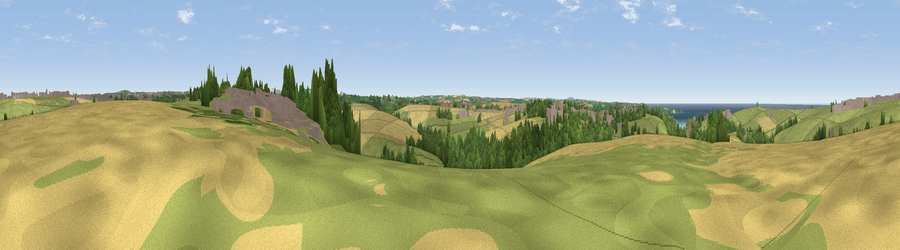

Viewpoint near St. Columb Minor
#13598 in England · top 30% of its area beats it · near St. Columb MinorThe view, rendered

A 360° render of this exact spot computed from the terrain model, tree cover and land cover — summer colours, afternoon light, calibrated against photographs of famous viewpoints. Real trees, hedges and buildings will differ in detail.
The panorama
Grey silhouette: terrain skyline in each direction (720 bearings, Earth curvature and refraction included). Dashed green: skyline with trees (+15 m) and buildings (+8 m) as obstacles. Blue strip: how far the ground is visible on each bearing.
Where the view opens
Wedge length = distance to the farthest visible ground on that bearing (vegetation-aware). Rings at 10, 25 and 50 km.
What fills the view
43% grassland · 31% cropland · 15% woodland · 6% built-up · 5% water
Angular shares of the visible panorama (visual magnitude), not map area. Landscape diversity 0.58 (0–1 Shannon).
Key numbers
More beautiful places nearby
The staircase of upgrades: each row has a higher view potential than everything closer. Driving times are estimates from straight-line distance, calibrated against real road routing — check an actual route before setting out.
| Place | Direction | Drive | Score |
|---|---|---|---|
| Viewpoint near Porth | WNW · 2 km | ~5 min | 63.5 |
| Viewpoint near Tregurrian | NNW · 3 km | ~7 min | 68.7 |
| Viewpoint near Mawgan Porth | N · 4 km | ~9 min | 70.0 |
| Viewpoint near Trenance | N · 6 km | ~12 min | 71.2 |
| Viewpoint near St Eval | NE · 7 km | ~14 min | 78.3 |
| Penhale Hill | SE · 9 km | ~17 min | 80.3 |
| Viewpoint near Penhale | SE · 10 km | ~19 min | 81.7 |
| Viewpoint near Nanpean | ESE · 15 km | ~26 min | 84.2 |
50.42533, -5.03006 · source: screening · position refined by local search. Computed location — check access rights before visiting.